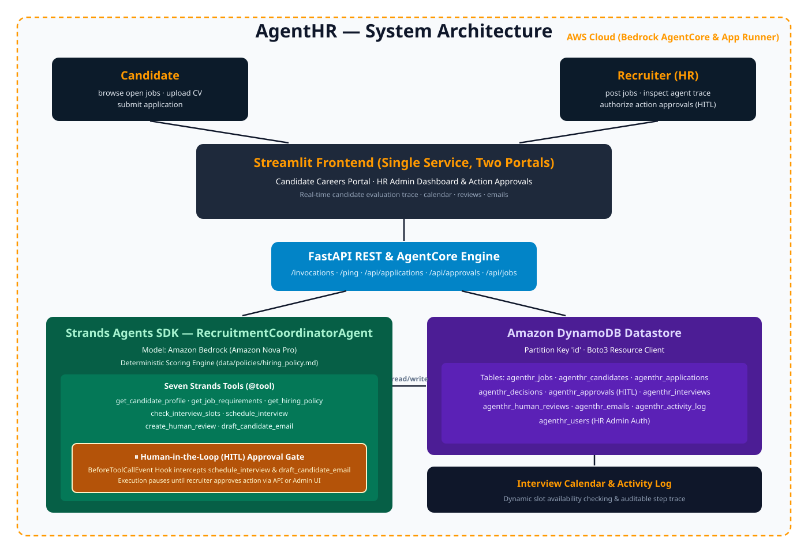

From Application Received to Recruitment Action Taken — Autonomously with Supervised Human Control.
AgentHR is not a passive "CV → score" generator. Powered by the Strands Agents SDK and Amazon Nova Pro on Amazon Bedrock, it parses resumes, evaluates compliance against deterministic hiring policies, and schedules interview actions through a Human-in-the-Loop (HITL) approval gate.
Autonomous Pipeline & HITL Approval Demo
Experience how AgentHR evaluates applications, computes policy match scores, triggers the Strands BeforeToolCallEvent hook, and resumes upon human recruiter authorization.
No active intercept. When the Strands Agent attempts outward tool calls (schedule_interview), execution pauses here for recruiter authorization.
The Seven Strands Agent Tools
Every tool is decorated with @tool from strands-agents and strictly typed for Amazon Nova Pro function calling.
get_candidate_profile()
Extracts structured candidate profile (skills, education, contact, experience years) from uploaded resume text.
get_job_requirements()
Retrieves mandatory and preferred requirements for the target position from the store database.
get_hiring_policy()
Reads decision rules directly from human-editable policy-as-code markdown (hiring_policy.md).
check_interview_slots()
Queries recruiter calendar schedule for available, non-conflicting time slots.
schedule_interview()
Reserves interview slot and updates application status. Gated by BeforeToolCallEvent hook.
create_human_review()
Escalates borderline applications (score 60–84 or missing mandatory info) to human recruiter queue.
draft_candidate_email()
Synthesizes personalized candidate email communications via Amazon Nova Pro on Bedrock. Gated by HITL approval.
End-to-End System Infrastructure
Deployed on AWS App Runner and Amazon Bedrock AgentCore Runtime with Amazon DynamoDB state persistence.

Repository Markdown Files Viewer
Inspect project specifications, Strands integration details, hiring policy logic, and AWS cloud deployment guides directly inside the browser.